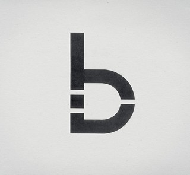

Repo Mission Control
Branches, issues, and releases tracked in one clean command chain.
Passionate about technology and the galaxy of things around us.
I'm self-taught Fullstack .NET Developer and founder of Strayker Software, also Bachelor of Computer Science on WSB Merito University Poznań. I like developing desktop applications and websites, discovering new technologies to achieve better results. Also keen on DevOps, Agile, Project Management and AI. My biggest project so far is 32-bit operating system Strayex.
Likes to play video games, watch some good movies and esports matches, read Fantasy/Sci-Fi books, also doing some amateur strategic/political analysis.
Here is a quicklook into what am I using during my work.
Branches, issues, and releases tracked in one clean command chain.
Main cockpit for fast edits, refactors, and quiet extension support.
Scripts, aliases, and quick diagnostics handled without leaving the prompt.
Restore, build, and debug cycles tuned for steady .NET delivery.
Layouts and interface ideas tested before they turn into code.
Project notes and handoff docs written to stay useful after launch.
Switch pages to preview highlighted work.
Simple, lightweight and well documented 32bit operating system.
https://github.com/Strayker-Software/StrayexOSAngular-based app from Frontend Mentor.
https://github.com/StraykerPL/RockPaperScissors
Binder is a simple SaaS solution allowing you to create ToDo and custom lists of tasks in clean and readable way.
https://github.com/Strayker-Software/BinderInterested into cooperation? Have a question regarding my projects?